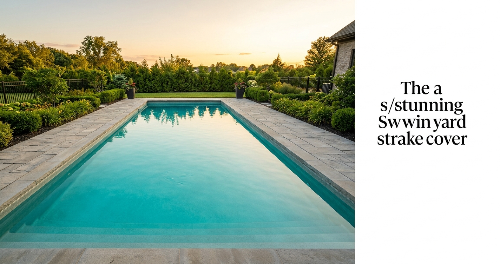

Most pool problems start small. A slight haze in the water, a pump that sounds slightly different than usual, or a hairline crack along the waterline tile. On their own, these signs are easy to brush off. But left alone, each one can escalate into an expensive repair that sidelines your pool for weeks and drains your wallet. Knowing what to look for — and when to act — is the difference between a minor service call and a full equipment replacement.
This guide walks through the four main areas where pools show signs of stress: the water itself, the interior surface, the equipment, and the structure. Check each regularly, and you'll catch problems early while they're still cheap to fix.
Water Clarity and Chemistry Warning Signs
Your pool water is the most immediate indicator of overall system health. Clear, slightly blue-tinted water with no visible debris is the baseline. Anything that deviates from that deserves a closer look.
Cloudy or hazy water almost always points to one of three causes: unbalanced chemistry (typically low sanitizer or high pH), a filtration system that isn't moving enough water, or excessive bather load without a corresponding shock treatment. A single cloudy morning after a pool party is normal — cloudiness that lingers for 48 hours or more is a signal that something in your system isn't functioning correctly.
Green water means algae, and algae means your chlorine has been overwhelmed. This can happen quickly in hot weather or after heavy rain dilutes your sanitizer levels. While green water looks dramatic, it's usually treatable with a proper shock and algaecide protocol. However, recurring algae blooms — water that goes green regularly even after treatment — suggest a deeper issue: inadequate circulation, a failing UV system, or a persistent chemistry imbalance that basic maintenance isn't catching.
"The most expensive repair I ever saw started as a cloudy-water complaint the homeowner ignored for three weeks. By the time we got there, the filter was clogged solid and the pump motor had seized from running dry." — Service technician with 14 years in the field
Foamy water on the surface, especially around return jets, typically indicates high calcium hardness, body oils, or residue from cleaning products that made their way into the water. A persistent foam line that doesn't break up even after skimming is worth testing and adjusting.
Surface and Interior Signs to Watch For
Pool interiors take a beating — from UV exposure, chemical contact, shifting soil, and thermal expansion and contraction through the seasons. Running your hand along the walls during a swim is one of the simplest inspections you can do.

Rough or sandpaper-like texture on a plaster interior usually means the calcium in the plaster is etching out — a result of water that has been chronically under-saturated or too acidic. This not only irritates swimmers' feet, it means the plaster is losing material and will eventually need to be resurfaced.
Staining comes in two main forms: organic (brown or black streaks from leaves, algae, or debris that sat on the surface) and metal (rust-colored rings, blue-green hues). Organic stains usually respond to localized chlorine treatment. Metal stains require a sequestrant and, if recurring, a diagnosis of where the metal is coming from — often corroding equipment components or source water with high iron content.
Cracks deserve immediate attention. A crack in the plaster that doesn't extend below the surface is a cosmetic issue. A crack that runs through the shell, especially one that changes width over time, is structural — and structural cracks can mean water is migrating behind the shell, which leads to far bigger problems.
Equipment Warning Signs You Shouldn't Ignore
Your pool's mechanical systems — pump, filter, heater, and sanitizer — work in concert. When one component underperforms, the others compensate, which shortens their lifespan. Here are the most common equipment signals that something is wrong:
- Pump runs but flow feels weak: Check the pump basket and skimmer baskets first — a clogged basket cuts flow dramatically. If baskets are clear, the impeller may be clogged or wearing out.
- Pump makes grinding, whining, or screaming noises: Bearings are going. Don't ignore this — a seized motor in mid-season means no circulation and rapid water quality decline.
- Filter pressure gauge is consistently high: The filter needs backwashing or cleaning. Running it clogged forces the pump to work harder and shortens its life.
- Heater takes much longer to reach temperature: Scale buildup on the heat exchanger is the most common cause. Regular descaling prevents permanent damage.
- Salt cell or chlorinator output is declining: Salt cells need periodic acid washing and eventually replacement. Most last 3–7 years depending on run time and water balance.
- Visible rust, corrosion, or water stains around equipment: Any persistent moisture around the equipment pad indicates a leak — find and fix it before it causes electrical damage.
Structural and Leak Warning Signs
A pool that loses more than a quarter inch of water per day through evaporation alone is a concern — especially in mild weather. The simplest field test is the bucket method: fill a bucket with pool water, place it on a step, mark both the bucket water level and the pool water level, and check after 24 hours. If the pool has dropped significantly more than the bucket, you likely have a leak.
Leaks can originate from fittings, return lines, the main drain, the skimmer throat, or the shell itself. Even small leaks compound over time: they waste water and chemicals, they erode the soil supporting the pool shell, and they can undermine the equipment pad.
Deck movement — concrete sections that have risen, sunk, or cracked along the pool bond beam — can indicate soil shifting underneath. This sometimes signals a leak that has been saturating and eroding the substrate for months. If your deck looks different from last season, have it looked at before the situation worsens.
Catching these signals early is what separates a $300 service visit from a $15,000 structural repair. When something seems off with your pool, trust your instincts and call a qualified technician. The cost of a diagnostic visit is always less than the cost of waiting.